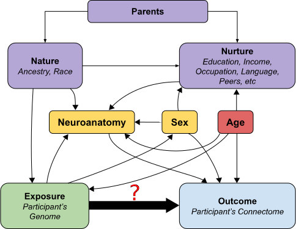

Heritability of Human Structural Connectomes
Contents
Heritability of Human Structural Connectomes#
Jaewon Chung#
(he/him) - NeuroData lab Johns Hopkins University - Biomedical Engineering
 j1c@jhu.edu
j1c@jhu.edu
 @j1c (Github)
@j1c (Github)
 @j1c (Twitter)
@j1c (Twitter)

What is heritability?#
Variations in phenotype caused by variations in genotype.
Potentially discover relationships between diseases and genetics.
Are the patterns of brain connectivity heritable?#
Brain connectivity as connectomes#
(aka networks or graphs)
Vertex: region of the brain
Edges: connectivity measure between a pair of vertices
Structural connectomes: estimated # of neuronal fibers
Undirected: neurons have no direction

How do we get structural connectomes?#

Quick detour to causal land
Directed acyclic graphs#
Representation of causal relationships of variables
From domain knowledge
Confounding#
Common cause for both exposure and outcome
Exposure: alcohol consumption
Outcome: lung cancer
Causes sprious association!
Solution: “condition” confounding
Toy example#
Smoking = \(\mathcal{N}(5, 1)\)
Alcohol = Smoking + \(\mathcal{N}(0, 1)\)
Lung Cancer = Smoking + \(\mathcal{N}(0, 1)\)
n = 100
Indep. Test |
Conditional Indep. Test |
|
|---|---|---|
Null Hypothesis |
Alcohol\(\perp\!\!\!\!\perp\)Lung cancer |
Alcohol\(\perp\!\!\!\!\perp\)Lung cancer\(|\)Smoking |
Alternate Hypothesis |
Alcohol\(\not\!\perp\!\!\!\!\perp\)Lung cancer |
Alcohol\(\not\!\perp\!\!\!\!\perp\)Lung cancer\(|\)Smoking |
Correlation (\(r\)) |
\(\approx 0.66\) |
\(\approx 0.006\) |
p-value |
\(\approx 0\) |
\(\approx 1\) |
Backdoor paths#
Non-causal path from exposure to outcome
Flow backwards out of exposure (arrow pointing towards exposure)
Confounders create backdoor paths
Path is blocked if a variable in the path is conditioned on.
Examples#
Four possible paths
Condition sets:
\(\{Z \}\)
\(\{Z, E\}\)
\(\{Z, A\}\)
\(\{Z, E, A\}\)
Backdoor criterion#
Causal effect exists between exposure (\(X\)) and outcome (\(Y\)) if:
No backdoor paths from \(X\) to \(Y\) exist
Measured covariates \(Z\) block all backdoor paths from \(X\) and \(Y\)
Mediation#
Lies on the causal path between exposure and outcome
Exposure: grades
Outcome: happiness
Mediator: self-esteem
Total effect: effect from both exposure and mediators
Direct effect: effect only from exposure
Toy example#
Grades = \(\mathcal{N}(5, 1)\)
Self-esteem = Grades + \(\mathcal{N}(0, 1)\)
Happiness = Grades + Self-esteem + \(\mathcal{N}(0, 1)\)
n = 100
Indep. Test |
Conditional Indep. Test |
|
|---|---|---|
Null Hypothesis |
Grades\(\perp\!\!\!\!\perp\)Happiness |
Grades\(\perp\!\!\!\!\perp\)Happiness\(|\)Self-esteem |
Alternate Hypothesis |
Grades\(\not\!\perp\!\!\!\!\perp\)Happiness |
Grades\(\not\!\perp\!\!\!\!\perp\)Happiness\(|\)Self-esteem |
Correlation (\(r\)) |
\(\approx 0.89\) |
\(\approx 0.63\) |
p-value |
\(\approx 0\) |
\(\approx 0\) |
Heritability as causal problem#

Do genomes affect connectomes?#
Our hypothesis: \(H_0: F(\)Connectome|Genome\() = F(\)Connectome\()\) \(H_A: F(\)Connectome|Genome\() \neq F(\)Connectome\()\)
Alternatively: \(H_0: F(\)Connectome, Genome\() = F(\)Connectome\()F(\)Genome\()\) \(H_A: F(\)Connectome, Genome\() \neq F(\)Connectome\()F(\)Genome\()\)
Known as independence testing
Test statistic: distance correlation (dcorr)
Implication if false: there exists an associational heritability.
Distance correlation#
Measures dependence between two multivariate quantities.
For example: connectomes, genomes.
Can detect nonlinear associations.
Measures correlation between pairwise distances.

Do genomes affect connectomes given covariates?#
Want to test: \(H_0: F(\)Conn., Genome|Covariates\() = F(\)Conn.|Covariates\()F(\)Genome|Covariates\()\) \(H_A: F(\)Conn., Genome|Covariates\() \neq F(\)Conn.|Covariates\()F(\)Genome|Covariates\()\)
Known as conditional independence test
Test statistic: Conditional distance correlation (cdcorr)
Implication if false: there exists causal dependence of connectomes on genomes.
Conditional distance correlation#
Augment distance correlation procedure with third distance matrix.

How do we compare genomes?#
Neuroimaging twin studies do not sequence genomes.
Coefficient of kinship (\(\phi_{ij}\))
Probabilities of finding a particular gene at a particular location.
d(Genome\(_i\), Genome\(_j\)) = 1 - 2\(\phi_{ij}\).
Relationship |
\(\phi_{ij}\) |
\(1-2\phi_{ij}\) |
|---|---|---|
Monozygotic |
\(\frac{1}{2}\) |
\(0\) |
Dizygotic |
\(\frac{1}{4}\) |
\(\frac{1}{2}\) |
Non-twin siblings |
\(\frac{1}{4}\) |
\(\frac{1}{2}\) |
Unrelated |
\(0\) |
\(1\) |
How do we compare connectomes?#
Random dot product graph (RDPG)
Each vertex (region of interest) has a low \(d\) dimensional latent vector (position).
Estimate latent position matrix \(X\) via adjacency spectral embedding.

d(Connectome\(_k\), Connectome\(_l\)) = \(||X^{(k)} - X^{(l)}R||_F\)
Neuroanatomy, Age (mediators)#
Literature show:
neuroanatomy (e.g. brain volume) is highly heritable.
age affects genomes and potentially connectomes
d(Covariates\(_i\), Covariates\(_j\)) = ||Covariates\(_i\) - Covariates\(_j\)||\(_F\)
Human Connectome Project#
Brain scans from identical (monozygotic), fraternal (dizygotic), non-twin siblings.
Regions defined using Glasser parcellation (180 regions).

Associational Test for Connectomic Heritability#
\(H_0: F(\)Connectome, Genome\() = F(\)Connectome\()F(\)Genome\()\) \(H_A: F(\)Connectome, Genome\() \neq F(\)Connectome\()F(\)Genome\()\)
Sex |
All |
Females |
Males |
|---|---|---|---|
p-value |
\(<1\times10^{-5}\) |
\(<1\times10^{-3}\) |
\(<1\times10^{-2}\) |
Associational Test for Neuroanatomy#
\(H_0: F(\)Neuroanatomy, Genome\() = F(\)Neuroanatomy\()F(\)Genome\()\) \(H_A: F(\)Neuroanatomy, Genome\() \neq F(\)Neuroanatomy\()F(\)Genome\()\)

Sex |
All |
Females |
Males |
|---|---|---|---|
p-value |
\(<1\times10^{-3}\) |
\(<1\times10^{-2}\) |
\(<1\times10^{-2}\) |
Causal Test for Connectomic Heritability#
\(H_0: F(\)Conn., Genome|Covariates\() = F(\)Conn.|Covariates\()F(\)Genome|Covariates\()\) \(H_A: F(\)Conn., Genome|Covariates\() \neq F(\)Conn.|Covariates\()F(\)Genome|Covariates\()\)
Sex |
All |
Females |
Males |
|---|---|---|---|
p-value |
\(<1\times10^{-2}\) |
\(<1\times10^{-2}\) |
\(<1\times10^{-2}\) |
Summary#

Present a causal model for heritability of connectomes.
Leveraged recent advances:
Statistical models for networks, allowing meaningful comparison of connectomes.
Distance and conditional distance correlation as test statistic for causal analysis\(^1\).
Connectomes are dependent on genome, suggesting heritability.